<!DOCTYPE html>
<html lang="en">
<head>
<meta charset="UTF-8">
<title>Layout Basics — Nexus Documentation | Graph Nexus</title>
<meta name="viewport" content="width=device-width, initial-scale=1">
<meta name="description" content="Layouts in Nexus let you display your data in a clear and effective format. There are several different layouts, each with multiple customisation options.">
<link rel="icon" href="../../assets/nexus-mark.png" type="image/png">
<link rel="preconnect" href="https://fonts.googleapis.com">
<link rel="preconnect" href="https://fonts.gstatic.com" crossorigin>
<link rel="stylesheet" href="https://fonts.googleapis.com/css2?family=Geist:wght@400;500;600;700&family=Geist+Mono:wght@400;500;600&display=swap">
<script>(function(){var t;try{t=localStorage.getItem('nexus-docs-theme')}catch(e){}if(t!=='light'&&t!=='dark')t=matchMedia('(prefers-color-scheme: dark)').matches?'dark':'light';document.documentElement.setAttribute('data-theme',t);if(location.protocol!=='file:'){var s=document.createElement('style');s.textContent='@media (prefers-reduced-motion: no-preference){@view-transition{navigation:auto}}';document.head.appendChild(s)}})()</script>
<link rel="stylesheet" href="../../assets/doc.css">
</head>
<body data-root="../../">
<a class="skip-link" href="#content">Skip to content</a>
<header class="site">
  <div class="logo">
    <a href="../../site/index.html">
      
    </a>
  </div>
  <button class="nav-toggle" type="button" aria-expanded="false" aria-controls="doc-nav" aria-label="Documentation menu">
    <svg class="menu-icon" viewBox="0 0 24 24" width="20" height="20" aria-hidden="true" fill="none" stroke="currentColor" stroke-width="1.75" stroke-linecap="round"><path class="l1" d="M4 7h16"/><path class="l2" d="M4 12h16"/><path class="l3" d="M4 17h16"/></svg><span class="nav-toggle-label" aria-hidden="true">Docs</span>
  </button>
  <div class="doc-search header-search" role="search">
    <label class="sr-only" for="doc-search-input">Search documentation</label>
    <input id="doc-search-input" type="search" placeholder="Search guides and API  /" autocomplete="off">
    <ul class="search-results" role="listbox" aria-label="Search results"></ul>
  </div>
  <nav aria-label="Documentation">
    <a href="../../site/index.html">Home</a>
    <a href="../../graph-nexus/index.html" class="current">Document</a>
    <a class="gh-star" href="https://github.com/dark-kazansky/graph-nexus" target="_blank" rel="noopener" aria-label="Graph Nexus on GitHub (opens in a new tab)"><svg viewBox="0 0 16 16" width="16" height="16" aria-hidden="true"><path fill="currentColor" d="M8 0C3.58 0 0 3.58 0 8c0 3.54 2.29 6.53 5.47 7.59.4.07.55-.17.55-.38 0-.19-.01-.82-.01-1.49-2.01.37-2.53-.49-2.69-.94-.09-.23-.48-.94-.82-1.13-.28-.15-.68-.52-.01-.53.63-.01 1.08.58 1.23.82.72 1.21 1.87.87 2.33.66.07-.52.28-.87.51-1.07-1.78-.2-3.64-.89-3.64-3.95 0-.87.31-1.59.82-2.15-.08-.2-.36-1.02.08-2.12 0 0 .67-.21 2.2.82.64-.18 1.32-.27 2-.27.68 0 1.36.09 2 .27 1.53-1.04 2.2-.82 2.2-.82.44 1.1.16 1.92.08 2.12.51.56.82 1.27.82 2.15 0 3.07-1.87 3.75-3.65 3.95.29.25.54.73.54 1.48 0 1.07-.01 1.93-.01 2.2 0 .21.15.46.55.38A8.013 8.013 0 0016 8c0-4.42-3.58-8-8-8z"/></svg></a>
  </nav>
  <div class="toggle-switch">
    <label class="switch-label">
      <input type="checkbox" class="checkbox" aria-label="Dark mode">
      <span class="slider" aria-hidden="true"></span>
    </label>
  </div>
</header>
<div class="doc-layout">
<nav class="doc-nav" id="doc-nav" aria-label="Graph Nexus documentation">
<details class="doc-nav-group">
<summary>Overview</summary><ul>
<li><a href="../../graph-nexus/index.html">Documentation Home</a></li>
<li><a href="../../graph-nexus/api.html">API Index</a></li>
<li><a href="../../graph-nexus/api-signatures.html">API Signatures</a></li>
</ul></details>
<details class="doc-nav-group">
<summary>Installing Nexus</summary><ul>
<li><a href="../../graph-nexus/installing/installing-graph-nexus.html">Installing Nexus</a></li>
<li><a href="../../graph-nexus/installing/importing-graph-nexus.html">Importing Nexus</a></li>
<li><a href="../../graph-nexus/installing/graph-nexus-and-typescript.html">Nexus and TypeScript</a></li>
<li><a href="../../graph-nexus/installing/upgrading.html">Upgrading</a></li>
<li><a href="../../graph-nexus/installing/using-graph-nexus-with-angular.html">Using Nexus with Angular</a></li>
<li><a href="../../graph-nexus/installing/using-graph-nexus-with-react.html">Using Nexus with React</a></li>
<li><a href="../../graph-nexus/installing/using-graph-nexus-with-rollup.html">Using Nexus with Rollup</a></li>
<li><a href="../../graph-nexus/installing/using-graph-nexus-with-vue.html">Using Nexus with Vue</a></li>
<li><a href="../../graph-nexus/installing/using-graph-nexus-with-webpack.html">Using Nexus with Webpack</a></li>
<li><a href="../../graph-nexus/installing/using-graph-nexus-with-plain-javascript.html">Using Nexus with plain JavaScript</a></li>
</ul></details>
<details class="doc-nav-group" open>
<summary>Basics</summary><ul>
<li><a href="../../graph-nexus/basics/architecture.html">Architecture</a></li>
<li><a href="../../graph-nexus/basics/chart-basics.html">Chart Basics</a></li>
<li><a href="../../graph-nexus/basics/combos.html">Combos</a></li>
<li><a href="../../graph-nexus/basics/events-basics.html">Events Basics</a></li>
<li><a href="../../graph-nexus/basics/layout-basics.html" class="current" aria-current="page">Layout Basics</a></li>
<li><a href="../../graph-nexus/basics/loading-data.html">Loading Data</a></li>
<li><a href="../../graph-nexus/basics/map-mode.html">Map Mode</a></li>
<li><a href="../../graph-nexus/basics/time-bar.html">Time Bar</a></li>
</ul></details>
<details class="doc-nav-group">
<summary>Features</summary><ul>
<li><a href="../../graph-nexus/features/3d-view.html">3D View</a></li>
<li><a href="../../graph-nexus/features/aggregate-links.html">Aggregate Links</a></li>
<li><a href="../../graph-nexus/features/chart-export.html">Chart Export</a></li>
<li><a href="../../graph-nexus/features/combos-concepts.html">Combos Concepts</a></li>
<li><a href="../../graph-nexus/features/fonts-and-font-icons.html">Fonts and Font Icons</a></li>
<li><a href="../../graph-nexus/features/graph-centrality.html">Graph Centrality</a></li>
<li><a href="../../graph-nexus/features/graph-engine.html">Graph Engine</a></li>
<li><a href="../../graph-nexus/features/node-and-combo-styling.html">Node and Combo Styling</a></li>
<li><a href="../../graph-nexus/features/pdf-export.html">PDF Export</a></li>
<li><a href="../../graph-nexus/features/right-to-left-text.html">Right-to-Left Text</a></li>
<li><a href="../../graph-nexus/features/self-links.html">Self Links</a></li>
<li><a href="../../graph-nexus/features/time-zones.html">Time Zones</a></li>
</ul></details>
<details class="doc-nav-group">
<summary>Best Practices</summary><ul>
<li><a href="../../graph-nexus/best-practices/asynchronous-javascript.html">Asynchronous JavaScript</a></li>
<li><a href="../../graph-nexus/best-practices/coding-and-testing-tips.html">Coding and Testing Tips</a></li>
<li><a href="../../graph-nexus/best-practices/cross-origin-images-cors.html">Cross-Origin Images (CORS)</a></li>
<li><a href="../../graph-nexus/best-practices/image-formats.html">Image Formats</a></li>
<li><a href="../../graph-nexus/best-practices/obfuscation-requirements.html">Obfuscation Requirements</a></li>
<li><a href="../../graph-nexus/best-practices/resizing-components.html">Resizing Components</a></li>
<li><a href="../../graph-nexus/best-practices/troubleshooting.html">Troubleshooting</a></li>
</ul></details>
<details class="doc-nav-group">
<summary>Third Party Integrations</summary><ul>
<li><a href="../../graph-nexus/integrations/angular-reference.html">Angular Reference</a></li>
<li><a href="../../graph-nexus/integrations/neo4j-tutorial.html">Neo4j Tutorial</a></li>
<li><a href="../../graph-nexus/integrations/react-reference.html">React Reference</a></li>
<li><a href="../../graph-nexus/integrations/third-party-libraries.html">Platforms and Dependencies</a></li>
<li><a href="../../graph-nexus/integrations/vue-reference.html">Vue Reference</a></li>
<li><a href="../../graph-nexus/integrations/webgl.html">WebGL</a></li>
</ul></details>
<details class="doc-nav-group">
<summary>About Nexus</summary><ul>
<li><a href="../../graph-nexus/about/accessibility.html">Accessibility</a></li>
<li><a href="../../graph-nexus/about/alpha-beta-features.html">Alpha and Beta Features</a></li>
<li><a href="../../graph-nexus/about/deprecation-process.html">Deprecation Process</a></li>
<li><a href="../../graph-nexus/about/performance.html">Performance</a></li>
<li><a href="../../graph-nexus/about/security.html">Security</a></li>
</ul></details>
<details class="doc-nav-group">
<summary>Timeline · Overview</summary><ul>
<li><a href="../../graph-nexus/timeline/js/docs.html">Documentation Home</a></li>
<li><a href="../../graph-nexus/timeline/js/api.html">API Reference</a></li>
</ul></details>
<details class="doc-nav-group">
<summary>Timeline · Getting Started</summary><ul>
<li><a href="../../graph-nexus/timeline/js/getting-started.html">Getting Started</a></li>
<li><a href="../../graph-nexus/timeline/js/updating.html">Updating</a></li>
</ul></details>
<details class="doc-nav-group">
<summary>Timeline · Basics</summary><ul>
<li><a href="../../graph-nexus/timeline/js/timeline-basics.html">Timeline Essentials</a></li>
<li><a href="../../graph-nexus/timeline/js/scales.html">Scales</a></li>
</ul></details>
<details class="doc-nav-group">
<summary>Timeline · Items</summary><ul>
<li><a href="../../graph-nexus/timeline/js/entities.html">Entities</a></li>
<li><a href="../../graph-nexus/timeline/js/events.html">Events</a></li>
<li><a href="../../graph-nexus/timeline/js/markers.html">Markers</a></li>
<li><a href="../../graph-nexus/timeline/js/time-series-charts.html">Time Series Charts</a></li>
<li><a href="../../graph-nexus/timeline/js/heatmap.html">Heatmap</a></li>
<li><a href="../../graph-nexus/timeline/js/font-icons.html">Font Icons</a></li>
</ul></details>
<details class="doc-nav-group">
<summary>Timeline · Data and Time</summary><ul>
<li><a href="../../graph-nexus/timeline/js/handling-data.html">Handling Data</a></li>
<li><a href="../../graph-nexus/timeline/js/updating-data.html">Updating Data</a></li>
<li><a href="../../graph-nexus/timeline/js/handling-time.html">Handling Time</a></li>
<li><a href="../../graph-nexus/timeline/js/time-zones.html">Time Zones</a></li>
</ul></details>
<details class="doc-nav-group">
<summary>Timeline · Interaction</summary><ul>
<li><a href="../../graph-nexus/timeline/js/handling-events.html">Handling Events</a></li>
</ul></details>
<details class="doc-nav-group">
<summary>Timeline · Integration</summary><ul>
<li><a href="../../graph-nexus/timeline/js/graph-nexus-integration.html">Nexus Integration</a></li>
<li><a href="../../graph-nexus/timeline/js/export.html">Export</a></li>
<li><a href="../../graph-nexus/timeline/js/migration.html">Migration</a></li>
</ul></details>
<details class="doc-nav-group">
<summary>Timeline · About</summary><ul>
<li><a href="../../graph-nexus/timeline/js/architecture.html">Architecture</a></li>
<li><a href="../../graph-nexus/timeline/js/accessibility.html">Accessibility</a></li>
<li><a href="../../graph-nexus/timeline/js/obfuscation-requirements.html">Obfuscation Requirements</a></li>
<li><a href="../../graph-nexus/timeline/js/alpha-beta-features.html">Alpha, Beta and Deprecated Features</a></li>
</ul></details>
</nav>
<main class="doc-content" id="content">
<h1>Layout Basics</h1><h2 id="intro">Introduction<a class="heading-anchor" href="#intro" aria-label="Link to this section">#</a></h2><p>Layouts in Nexus let you display your data in a
clear and effective format. There are several different layouts,
each with multiple customisation options.</p><pre class="prettyprint prettyprinted"><code:lang-javascript><span class="com">// pass the layout name as the first argument of the chart.layout function</span><span class="pln">
chart</span><span class="pun">.</span><span class="pln">layout</span><span class="pun">(</span><span class="str">'layout name'</span><span class="pun">);</span></code:lang-javascript></pre><p>As new nodes are initially given default coordinates, it's almost always a good idea to
call <a href="../api.html#Chart_layout">chart.layout()</a> after you have loaded in data to avoid nodes being on top of one another.</p><p>If you're adding new data and want to keep the approximate position of existing nodes, consider using
<a href="../api.html#Chart_expand">chart.expand()</a>.
</p><p>See also the <a href="../api.html#Chart_layout_options">layout options API</a>
which you can use to customise your layouts.</p><h2 style="max-width: 300px" id="organicstandard">Organic<a class="heading-anchor" href="#organicstandard" aria-label="Link to this section">#</a></h2><p>The organic layout is our default layout that is used when you don't 
specify a layout while running <a href="../api.html#Chart_layout">chart.layout()</a>
or <a href="../api.html#Chart_expand">chart.expand()</a>.</p><p>Organic is a force-directed layout, which means that the layout places connected nodes closer together
and organises them in a way that reduces link crossings in the chart as much as possible.
It is clear, reliable
and makes a good all-rounder for any type or size of
data as it focuses on finding patterns and symmetries.</p><p>In addition, organic is especially useful for untangling complex networks
as it spreads nodes and links apart.</p><p>Organic can be run as a short layout in <a href="#adaptiveBehaviour">adaptive mode</a>
which adjusts the current item positions to respond to layout changes 
while minimising the overall amount of movement.</p><div class="images">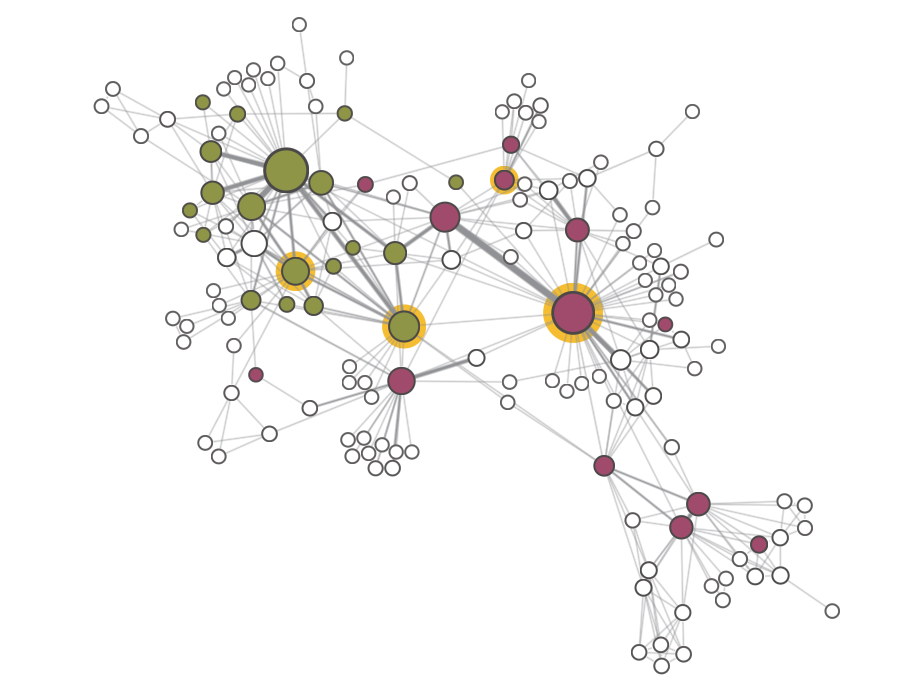</div><h2 style="max-width: 300px" id="trees">Sequential<a class="heading-anchor" href="#trees" aria-label="Link to this section">#</a></h2><p>The sequential layout is useful for displaying data with a clear sequence
of links between distinct levels of nodes.</p><p>It can automatically work out where to place nodes in the hierarchy
in order to minimise link crossings and make efficient use of the available screen space.</p><p>Sequential can be run as a short layout in <a href="#adaptiveBehaviour">adaptive mode</a>
which adjusts the current item positions to respond to layout changes 
while minimising the overall amount of movement.</p><p>The <a href="#sequentialOptions">sequential layout options</a>
let you customise position of nodes in the hierarchy
and also in relation to each other within each level.</p><div class="images">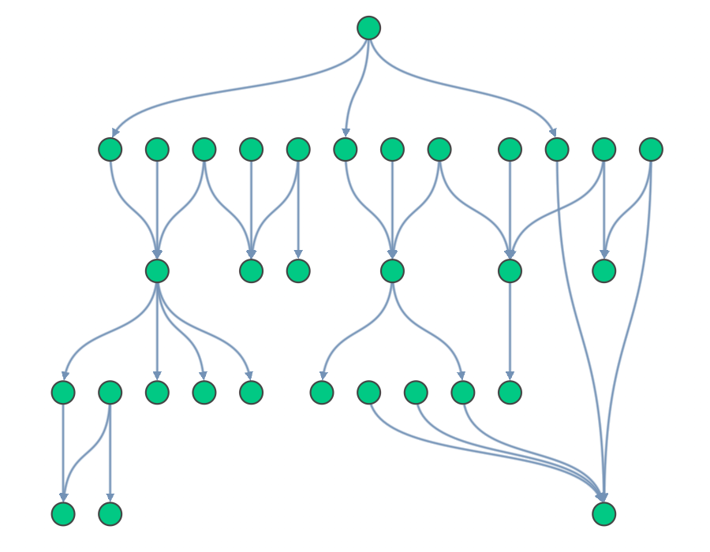</div><h2 style="max-width: 150px" id="structural">Structural<a class="heading-anchor" href="#structural" aria-label="Link to this section">#</a></h2><p>The structural layout functions in a similar manner to a force-directed layout, but nodes with
the same neighbouring nodes are grouped together.</p><p>This makes it easier to see the general
organisation of a network.</p><p>By giving you an overview of the clusters within a network, the structural layout allows you
to see groupings and patterns without the need to focus on any one element.</p><div class="images">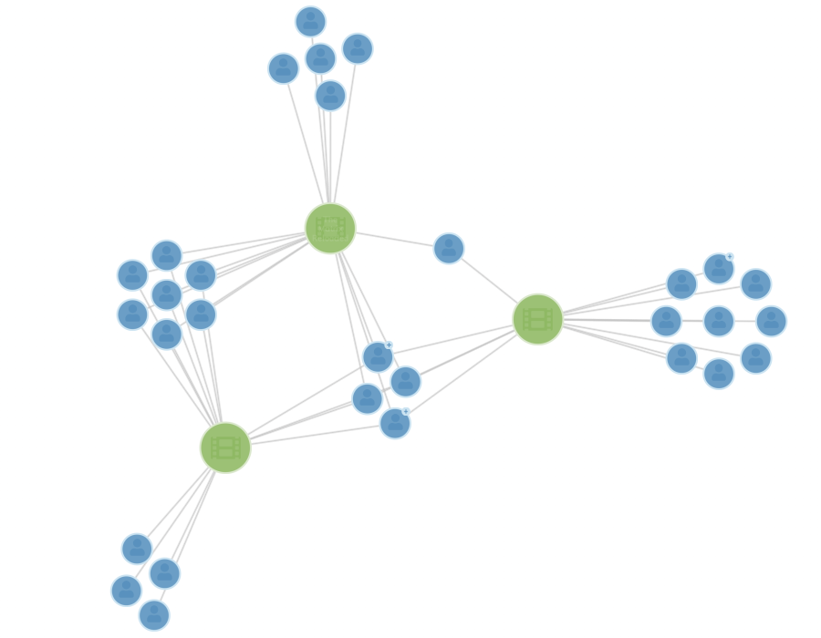</div><h2 style="max-width: 150px" id="radial">Radial<a class="heading-anchor" href="#radial" aria-label="Link to this section">#</a></h2><p>The radial layout arranges nodes in concentric circles around the original subject in a
radial tree.</p><p>Each 'generation' of node becomes a new ring surrounding the previous generations.</p><p>This layout is a great option for networks containing a large number
of child nodes compared to the number of parents as it makes use of any
available space.</p><p>As with sequential, radial can be customised using the
<a href="../api.html#Chart_layout_options_top">top</a> and
<a href="../api.html#Chart_layout_options_level">level</a> options.</p><div class="images">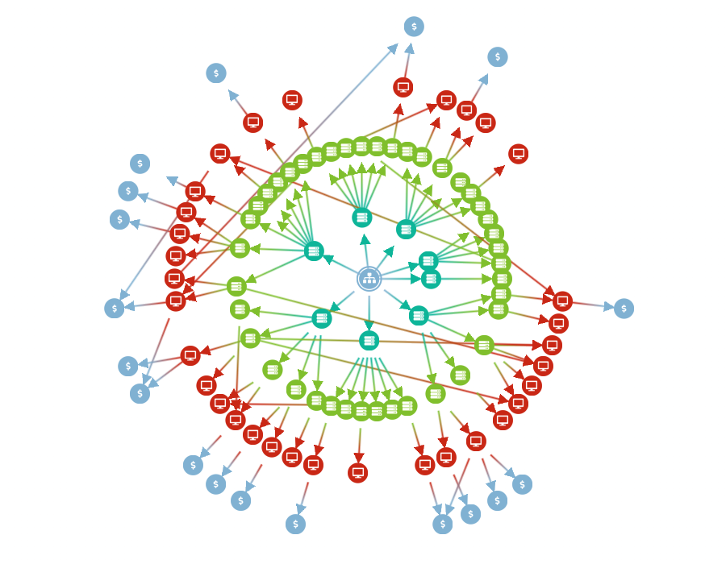</div><h2 style="max-width: 100px" id="lens">Lens<a class="heading-anchor" href="#lens" aria-label="Link to this section">#</a></h2><p>The lens layout pushes highly-connected nodes into the centre, and forces less connected
nodes into the periphery.</p><p>The circular outline makes good use of
the available space and generally creates networks that are denser than other layouts.</p><p>This results in an attractive 'lens' view which is particularly useful for large networks.</p><p>Lens is the default layout for arranging items inside open combos.</p><div class="images">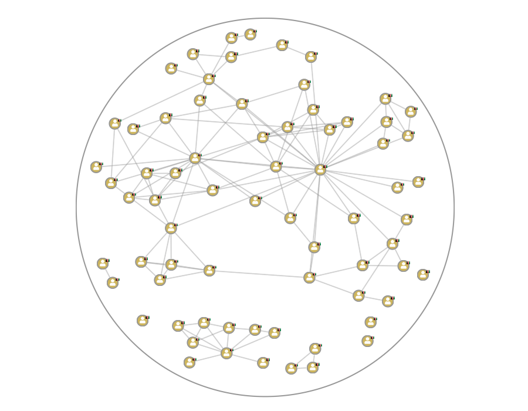</div><h2 style="max-width: 300px" id="options">Layout Options<a class="heading-anchor" href="#options" aria-label="Link to this section">#</a></h2><p class="first"><a href="../api.html#Chart_layout_options">Layout options</a> can be
used to fine-tune the appearance and behaviour of layouts.
Options are set in the second argument of the layout API:</p><pre class="prettyprint prettyprinted"><code:lang-javascript><span class="com">// brings the nodes closer together</span><span class="pln">
chart</span><span class="pun">.</span><span class="pln">layout</span><span class="pun">(</span><span class="str">'layout name'</span><span class="pun">,</span><span class="pln"> </span><span class="pun">{</span><span class="pln"> tightness</span><span class="pun">:</span><span class="pln"> </span><span class="lit">10</span><span class="pln"> </span><span class="pun">});</span></code:lang-javascript></pre><p>Note that not all layout options apply to every layout.
</p><h3 id="adaptiveBehaviour">Adaptive Behaviour<a class="heading-anchor" href="#adaptiveBehaviour" aria-label="Link to this section">#</a></h3><p>Adaptive behaviour is the layout's ability to respond to changes
in the data while minimising unnecessary movement and preserving as much of the original
layout as possible. Different layouts achieve the best adaptive behaviour using different options.
</p><div class="table-scroll"><table class="table"><thead><tr><th>Use Case Example</th><th>Organic</th><th>Sequential</th><th>Lens</th><th>Radial</th><th>Structural</th></tr></thead><tbody><tr><td>Adaptive behaviour when adding data with expand()</td><td><a href="../api.html#Chart_expand_options_layout_fix">fix: 'adaptive'</a></td><td><a href="../api.html#Chart_expand_options_layout_fix">fix: 'adaptive'</a></td><td>X</td><td><a href="../api.html#Chart_layout_options_packing">packing: 'adaptive'</a></td><td><a href="../api.html#Chart_layout_options_packing">packing: 'adaptive'</a></td></tr><tr><td>Adaptive behaviour when loading or changing data with layout()</td><td><a href="../api.html#Chart_layout_options_mode">mode: 'adaptive'</a></td><td><a href="../api.html#Chart_layout_options_mode">mode: 'adaptive'</a></td><td>X</td><td><a href="../api.html#Chart_layout_options_packing">packing: 'adaptive'</a></td><td><a href="../api.html#Chart_layout_options_packing">packing: 'adaptive'</a></td></tr><tr><td>Consistent layout with unchanged components</td><td><a href="../api.html#Chart_layout_options_consistent">consistent: true</a></td><td>X</td><td><a href="../api.html#Chart_layout_options_consistent">consistent: true</a></td><td>X</td><td>X</td></tr><tr><td>Fix existing nodes when adding data with expand()</td><td><a href="../api.html#Chart_expand_options_layout_fix">fix: 'all'</a></td><td>X</td><td>X</td><td>X</td><td>X</td></tr><tr><td>Fix existing nodes when loading or changing data with layout()</td><td><a href="../api.html#Chart_layout_options_fixed">fixed: []</a></td><td>X</td><td>X</td><td>X</td><td>X</td></tr></tbody></table></div><h4 id="consistent">consistent<a class="heading-anchor" href="#consistent" aria-label="Link to this section">#</a></h4><p>The <a href="../api.html#Chart_layout_options_consistent">consistent</a>
option produces the same chart display for the same chart structure each
time the layout is run.
This can be useful for providing undo-redo support for a chart.
Note that layouts will only be consistent with previous layouts that use the exact same data and
options.
</p><h4 id="fix">fix<a class="heading-anchor" href="#fix" aria-label="Link to this section">#</a></h4><p>The <a href="../api.html#Chart_expand_options_layout_fix">fix</a> option
specifies which nodes should be fixed in position when the layout is run during <code class="black">chart.expand()</code>.
</p><h4 id="fixed">fixed<a class="heading-anchor" href="#fixed" aria-label="Link to this section">#</a></h4><p>The <a href="../api.html#Chart_layout_options_fixed">fixed</a>
option fixes chosen nodes during <code class="black">chart.layout()</code>.
Fixed nodes will keep their position relative to other fixed nodes in the component, although
the component itself may move.
</p><h4 id="adaptiveMode">mode<a class="heading-anchor" href="#adaptiveMode" aria-label="Link to this section">#</a></h4><p>By default, layouts arrange nodes based on a random initialisation,
producing a new result every time you run a layout. Setting
<a href="../api.html#Chart_layout_options_mode">mode</a>
to 'adaptive' when running <code class="black">chart.layout()</code>
runs a short force-directed layout instead.
This uses the current node positions as a starting point and adapts
them in a minimal way to respond to changes in the data.</p><p>This mode is ideal for visualising data evolving with time
with the <a href="../api.html#Chart_show">show</a>
function and the <a href="../basics/time-bar.html">time bar</a>.</p><h4 id="packing">packing<a class="heading-anchor" href="#packing" aria-label="Link to this section">#</a></h4><p>The <a href="../api.html#Chart_layout_options_packing">packing</a>
option controls where components are placed relative to one another. This affects
both the overall shape and the behaviour of your graph when adding additional data.
</p><h3 id="sequentialOptions">Sequential Layout Options<a class="heading-anchor" href="#sequentialOptions" aria-label="Link to this section">#</a></h3><p>Sequential automatically places nodes depending on the direction of arrows on links.</p><p>You can also customise the position of nodes in sequential using the
<a href="../api.html#Chart_layout_options_level">level</a> or
<a href="../api.html#Chart_layout_options_top">top</a> options:
</p><ul><li>Use the <code class="black">level</code> option to specify the name of a property in a node's custom data object,
<a href="../api.html#ItemFormat_Node_properties_d">d</a>, whose value is used to set that node's level.</li><li>Use the <code class="black">top</code> option to specify the id(s) of the node(s) at the top of the hierarchy.</li><li>If both are specified, <code class="black">level</code> is used.</li><li>If neither are specified, levels are assigned automatically (inferred from the nodes' links).</li></ul><p>As an example, with this data:
</p><div class="images" style="min-height:185px;">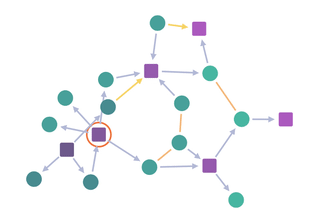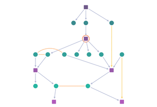</div><pre class="prettyprint prettyprinted"><code:lang-javascript><span class="pun">{</span><span class="pln"> id</span><span class="pun">:</span><span class="pln"> </span><span class="str">'node1'</span><span class="pun">,</span><span class="pln"> type</span><span class="pun">:</span><span class="pln"> </span><span class="str">'node'</span><span class="pun">,</span><span class="pln">
  d</span><span class="pun">:</span><span class="pln"> </span><span class="pun">{</span><span class="pln">
    levelProperty</span><span class="pun">:</span><span class="pln"> </span><span class="lit">1</span><span class="pln"> </span><span class="com">// this node will be in the first level</span><span class="pln">
  </span><span class="pun">}</span><span class="pln">
</span><span class="pun">},</span><span class="pln"> </span><span class="pun">{</span><span class="pln"> id</span><span class="pun">:</span><span class="pln"> </span><span class="str">'node2'</span><span class="pun">,</span><span class="pln"> type</span><span class="pun">:</span><span class="pln"> </span><span class="str">'node'</span><span class="pun">,</span><span class="pln">
  d</span><span class="pun">:</span><span class="pln"> </span><span class="pun">{</span><span class="pln">
    levelProperty</span><span class="pun">:</span><span class="pln"> </span><span class="lit">2</span><span class="pln"> </span><span class="com">// this node will be in the level below</span><span class="pln">
</span><span class="pun">}</span><span class="pln"> </span><span class="pun">}</span></code:lang-javascript></pre><p>we can run:</p><pre class="prettyprint prettyprinted"><code:lang-javascript><span class="pln">chart</span><span class="pun">.</span><span class="pln">layout</span><span class="pun">(</span><span class="str">'sequential'</span><span class="pun">,</span><span class="pln"> </span><span class="pun">{</span><span class="pln">level</span><span class="pun">:</span><span class="pln"> </span><span class="str">'levelProperty'</span><span class="pun">})</span><span class="pln">
</span><span class="com">// puts node1 above node2 in the hierarchy</span></code:lang-javascript></pre><p class="first">By default, sequential aligns nodes on the same level across all components
(i.e. <a href="../api.html#Chart_layout_options_packing">packing</a> set to 'aligned').
In cases where relationship between components doesn't need to be displayed, components in sequential can be packed like any other layout.
</p><p>Within individual node levels, you can further customise sequential
using the
<a href="../api.html#Chart_layout_options_orderBy">orderBy</a>
and <a href="../api.html#Chart_layout_options_stacking">stacking</a> options.</p><pre class="prettyprint prettyprinted"><code:lang-javascript><span class="pln">chart</span><span class="pun">.</span><span class="pln">layout</span><span class="pun">(</span><span class="pln">
  </span><span class="str">'sequential'</span><span class="pun">,</span><span class="pln"> </span><span class="pun">{</span><span class="pln">
    orderBy</span><span class="pun">:</span><span class="pln"> </span><span class="pun">{</span><span class="pln"> </span><span class="kwd">property</span><span class="pun">:</span><span class="pln"> </span><span class="str">'orderByProperty'</span><span class="pun">,</span><span class="pln"> sortBy</span><span class="pun">:</span><span class="pln"> </span><span class="str">'ascending'</span><span class="pln"> </span><span class="pun">},</span><span class="pln">
    packing</span><span class="pun">:</span><span class="pln"> </span><span class="str">'rectangle'</span><span class="pun">,</span><span class="pln">
    stacking</span><span class="pun">:</span><span class="pln"> </span><span class="pun">{</span><span class="pln"> arrange</span><span class="pun">:</span><span class="pln"> </span><span class="str">'grid'</span><span class="pln"> </span><span class="pun">},</span><span class="pln">
</span><span class="pun">})</span></code:lang-javascript></pre><p>The string specified in the <a href="../api.html#Chart_layout_options_orderBy_property">property</a>
option gives the name of a property in a node's custom data object,
<a href="../api.html#ItemFormat_Node_properties_d">d</a>.
Sequential uses the value of that property to order nodes relative to each other within the same level.</p><p>The <a href="../api.html#Chart_layout_options_stacking">stacking</a> option
controls positions of nodes that share the same neighbours, level and <code class="black">property</code> value in <code class="black">orderBy</code> (if specified).
The <a href="../api.html#Chart_layout_options_stacking_arrange">arrange</a>
property lets you stack such nodes into grids.</p><p>The <code class="black">stacking</code> option is useful for visualising very wide family trees
as it makes better use of space and helps to display wide networks at more readable zoom levels.</p><div class="images">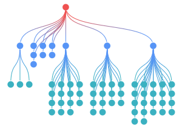</div><h2 style="max-width: 500px" id="arrange">Arrangements - Layouts inside Combos<a class="heading-anchor" href="#arrange" aria-label="Link to this section">#</a></h2><p class="first">When placing nodes inside open combos, Nexus uses arrangements instead of layouts
to get the best use of space. </p><p>You can set the arrangement in the <code class="black">name</code> option and specify
other options such as the arrangement <code class="black">tightness</code>:
</p><pre class="prettyprint prettyprinted"><code:lang-javascript><span class="pln">chart</span><span class="pun">.</span><span class="pln">combo</span><span class="pun">().</span><span class="pln">arrange</span><span class="pun">(</span><span class="str">'combo_name'</span><span class="pun">,</span><span class="pln"> </span><span class="pun">{</span><span class="pln"> name</span><span class="pun">:</span><span class="pln"> </span><span class="str">'arrangement name'</span><span class="pun">,</span><span class="pln"> tightness</span><span class="pun">:</span><span class="pln"> </span><span class="lit">4</span><span class="pln"> </span><span class="pun">});</span></code:lang-javascript></pre><span class="arrangement"><h3 style="margin-top: 20px" id="concentric">Concentric<a class="heading-anchor" href="#concentric" aria-label="Link to this section">#</a></h3>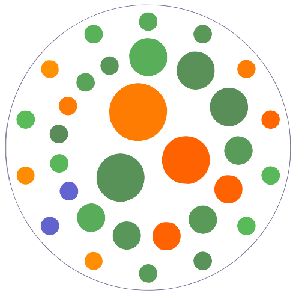<p class="box">Lays out nodes in a series of rings, with larger nodes in the centre.
<br><br>
Provides the best use of space within circular combos
when the links within the combo are not important.
</p></span><span class="arrangement"><h3 style="margin-top: 20px" id="lens-2">Lens<a class="heading-anchor" href="#lens-2" aria-label="Link to this section">#</a></h3>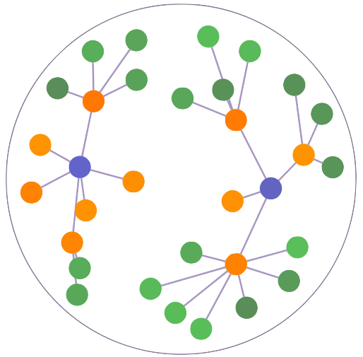<p class="box">Pushes highly-connected nodes into the centre,
and forces less connected nodes into the periphery.
<br><br>
Default for cicular combos as it gives a space-efficient view of networks inside combos.
</p></span><span class="arrangement"><h3 style="margin-top: 20px" id="grid">Grid<a class="heading-anchor" href="#grid" aria-label="Link to this section">#</a></h3>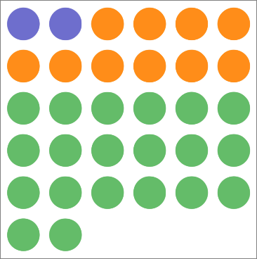<p class="box">Lays out nodes in a grid from left to right and from the top down,
in the order set by the node ids.
You can control the row or column dimension with the
<a href="../api.html#Combo_arrange_options_gridShape">gridShape</a> option.
<br><br>
Default for <a href="../basics/combos.html#rectangular">rectangular combos</a>
as it makes the best use of space when the links within combos are not important.
</p></span><span class="arrangement"><h3 style="margin-top: 20px" id="sequential">Sequential<a class="heading-anchor" href="#sequential" aria-label="Link to this section">#</a></h3>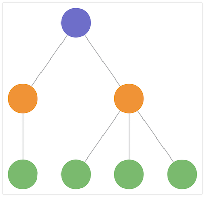<p class="box">Lays out a hierarchy of nodes according to which levels they belong to, and in a way that minimises empty space and link crossings.
You can further customise this arrangement in the 
<a href="../api.html#Combo_combine_options_arrange">arrange</a> object.
<br><br>
Provides useful insight into complex hierarchical data.</p></span>
<nav class="page-nav" aria-label="Previous and next page">
<a class="prev" href="../../graph-nexus/basics/events-basics.html"><span class="dir">Previous</span><span class="label">Events Basics</span></a>
<a class="next" href="../../graph-nexus/basics/loading-data.html"><span class="dir">Next</span><span class="label">Loading Data</span></a>
</nav>
</main>
<aside class="doc-toc" aria-label="On this page">
<h2>On this page</h2>
<ul>
<li class="lvl-2"><a href="#intro">Introduction</a></li>
<li class="lvl-2"><a href="#organicstandard">Organic</a></li>
<li class="lvl-2"><a href="#trees">Sequential</a></li>
<li class="lvl-2"><a href="#structural">Structural</a></li>
<li class="lvl-2"><a href="#radial">Radial</a></li>
<li class="lvl-2"><a href="#lens">Lens</a></li>
<li class="lvl-2"><a href="#options">Layout Options</a></li>
<li class="lvl-3"><a href="#adaptiveBehaviour">Adaptive Behaviour</a></li>
<li class="lvl-3"><a href="#sequentialOptions">Sequential Layout Options</a></li>
<li class="lvl-2"><a href="#arrange">Arrangements - Layouts inside Combos</a></li>
<li class="lvl-3"><a href="#concentric">Concentric</a></li>
<li class="lvl-3"><a href="#lens-2">Lens</a></li>
<li class="lvl-3"><a href="#grid">Grid</a></li>
<li class="lvl-3"><a href="#sequential">Sequential</a></li>
</ul>
</aside>
</div>
<footer class="site">
  <p>Graph Nexus</p>
  <p class="legal">© 2026 Graph Nexus. All rights reserved.</p>
</footer>
<script src="../../assets/search-index.js"></script>
<script src="../../assets/docs.js"></script>
</body>
</html>
